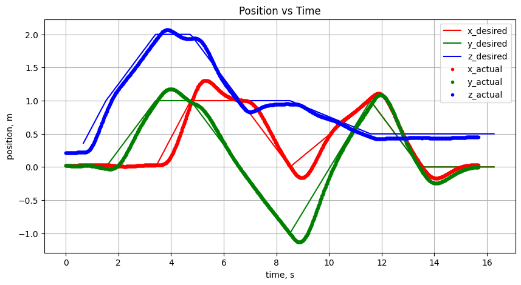

Autonomous Visual Inertial Odometry based Quadcopter

Project Overview
The task of autonomous VIO-based quadrotor control is divided into two parts. First, the trajectory should be planned and tracked accurately with the ground-truth statement of the robot. Second, the robot's state must be estimated given noisy sensor measurements. This project was performed in a simulated environment in python with the use of python libraries like Scipy and Numpy.
Geometric Nonlinear Controller
Starting from a PD controller equation, the four forces exerted by the quadrotor's motors was derived in a Geometric Nonlinear Controller. Controller gains K_p, K_d, K_R, and K_omega were tuned to create a stable quadrotor that could handle various trajectories.
A* Search and Djikstra's Algorithm
A modified A* search and Djikstra's Algorithm was implemented to hand big or infinite graphs (for trajectory spaces over long distances) with a Euclidean distance heuristic. While A* search calculated cost as the combination of the distance between the current node to the next node and the distance between the next node to the goal node, Djikstra's algorithm calculated cost as the distance between the current node and the next node.
Path Pruning
Various path pruning procedures were used to simplify the A* path:
- The Ramer Douglas Peucker Algorithm (also known as the iterative end-point fit algorithm) was implemented to prune a point-dense trajectory into a simplified trajectory.
- After simplifying the trajectory using the RDP algorithm, an issue arose in which long stretches of flight caused the quadrotor to experience large errors in flight. To ammend this, midpoints were added into the trajectory by checking if there were adjacent pairs of points that were more than 3 meters apart. If there were, a midpoint was added.
Error State Kalman Filter
- An Error State Kalman Filter (ESKF) was used to estimate the pose of a flying robotic platform usig information obtained from its onboard sensors. These sensors include an onboard inertial measurement unit (IMU) and an onboard stereo pair.
- A 6-axis IMU was used, providing the acceleration and angular rate measurements. The gyroscope and accelerometer information from the IMU was combined using a complementary filter, whcih low-passes the accelerometer and high-passes the gyroscope measurements, which takes advantage of the accelerometer's innate ability ot not accumulate measurement bais and the gyroscope's ability to have low noise over short periods of time.
- The pose of the quadrotor was estimated from stereo correspondences using a RANSAC based stereo odometry system. This was performed using the classic RANSAC algorithm of selecting n equations from the overconstrained linear system at random without replacement, solving for x using the Standard Least Squares formulation, determining the inliers with a tuned threshold value, retaining the solution with the largest number of inliers, and repeating until the largest inlier set is discovered. Given the proposed solution, we can determine the pose of the quadrotor.